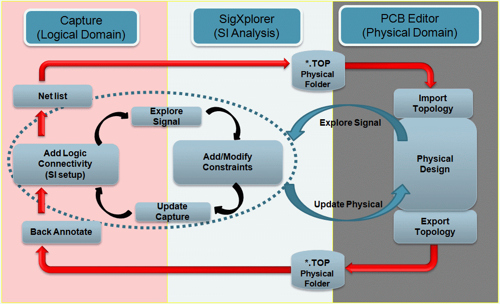
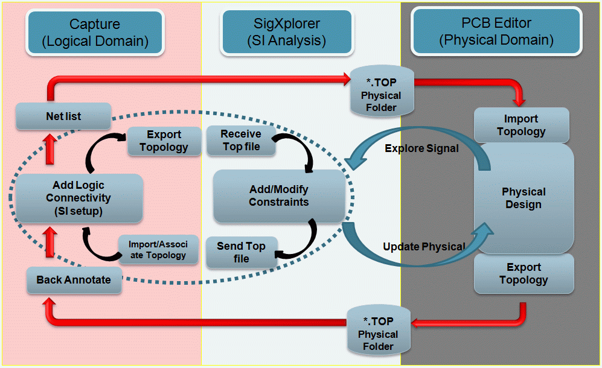

You can add Electrical Cset to your design either in the concurrent mode by exploring the signals in Signal Explorer or in the distributed mode by importing Electrical Csets. After adding the Electrical Cset to a design, you can assign or associate the Electrical Csets to the nets in your design. You can also export topology files that can be opened in the distributed mode in Signal Explorer.
|
|
If you instantiate an external block in your top-level design and the block has Electrical Cset defined, you need to import the associated topology file into the top-level design. |
In both the distributed and concurrent modes, you can import the Electrical Csets in PCB Editor and launch Constraint Manager for the Electrical Csets. You can backannotate any changes to OrCAD Capture from PCB Editor.
|
|
If PROPAGATION_DELAY or RELATIVE_PROPAGATION_DELAY are present in the constraint set, an error message might be displayed when you perform Update Capture, Associate Electrical Cset, or Import Electrical Cset. You can ignore this error. For example, if PROPAGATION_DELAY is present in the constraint set, the following error message might be displayed: ERROR: unable to create property PROPAGATION_DELAY on object Xnet aaa TX+ |
Concurrent Mode

In concurrent mode, when Signal Explorer and Capture are in
the same system, you can select any net on the design and
choose SI Analysis – Explore Signal
or choose SI Analysis – Explore
Signal from the pop-up menu to generate XNET
definition and launch Signal Explorer. A Topology file
(.top) is generated and displayed by Signal
Explorer.
The displayed topology includes any discrete components
with SIGNAL_MODEL property which are part of
the XNET and any T-points that are part of the topology.
You can choose to change parameter values for discrete components in Signal Explorer and save the topology file. In Signal Explorer, choose File – Save to save the topology and then choose File – Update Capture.
|
|
You might need to backannotate your design if you changed any properties for a component in Signal Explorer. |
When you exit Signal Explorer, the topology file is added
as the value of the ELECTRICAL_CONSTRAINT_SET
property of the net in Capture.
Distributed Mode

In the distributed mode, where Signal Explorer is located in another system, you can use Export Electrical Cset to export the Cset file from OrCAD Capture. The exported Cset can then be sent for SI Analysis. After importing the Csets into SigXplorer and updating them, the Csets can be sent back to be imported and associated in OrCAD Capture using the Import Electrical Cset menu item.
|
|
You must load and save the Electrical Csets in SigXplorer before importing and applying them in OrCAD Capture. |